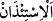
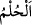
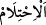
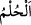
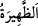
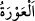
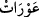

“Ey îman edenler!” Hitap, bütün mü’min erkeklere ve kadınlaradır. “Ellerinizin
altında bulunan” köle ve câriyeleriniz “ve içinizden” yâni hürlerden “henüz ergenlik
çağına girmemiş olanlar,” yâni bilinen bülûğ çağına ermemiş çocuklar “sabah
namazından önce,” Çünkü bu vaktin yataklardan kalkarak uyku elbiselerini çıkarıp
uyanıklık elbiselerini giyinme vakti olduğu açıktır. “Öğleyin soyunduğunuz vakit” yâni
gündüz ortası uykusu demek olan kaylûle için, gündüzleyin giydiğiniz elbiseleri
çıkardığınız vakit. “Ve yatsı namazından sonra” Çünkü bu vakit elbiselerin çıkarılıp
yorgan ve çarşaflara bürünüldüğü vakittir. “(Yanınıza gireceklerinde) sizden üç defa”
Yâni gece ve gündüz üç vakitte “izin istesinler.” Çünkü bu vakitler açıklık ve gaflet
saatleridir. Yâni onların sizden izin istemeleri gerekir.
“
” izin istemek demektir. Bir şeye izin vermek ise onun câiz olduğunu bildirmek
ve o konuda ruhsat tanımaktır.
Ergenlik çağına girmekten (bülûğ), “
” kelimesiyle bahsedilmesi, onun ergenliğin
en açık delili olmasındandır. Erkek çocuğun ergenliğe ulaşması, cimâ ettiği zaman inzâl
vaki olacak bir duruma ulaşmasıdır.
el-Kâmûs’ta der ki: “
” ve “
” uykuda cimâ etmek demektir.”
el-Müfredât’ta ise şöyle der: “
” gerçekte akıl anlamında değildir. Fakat onu,
akıllanmanın sebeplerinden biri olduğu için akıl ile tefsir etmişlerdir. Bülûğun “
”
diye isimlendirilmesi, sâhibinin ihtilâma elverişli olması sebebiyledir.”
“
” kelimesi, vakti beyan etmekte ve gündüzün orta vaktinde sıcaklığın
şiddetlenmesi mânâsına gelmektedir. el-Kâmûs’ta der ki: “
” gündüzün ortalandığı
sınırdır. Ancak bu sıcaklık bakımındandır. İzin isteme emrinin temel sebebi olan
elbiselerin çıkarılması, birinci ve üçüncü vakitlerde değil de sadece bu vakitte açıkça
ifâde edilmiştir. Çünkü kaylûle için elbiseleri çıkarmak, zamanının azlığı, giriş ve
çıkışların çokça olduğu gündüzleyin vukû bulması gibi sebeplerle diğer iki vakte göre
sürekli olabilecek bir durum değildir. Çünkü bu iki vakitte soyunmak, açıkça zikretmeye
ihtiyaç hissettirmeyecek derecede bilinen bir husustur.
“Bunlar, mahrem (kapanmamış) halde bulunabileceğiniz” sizin âdeten tesettüre
riâyet edemeyeceğiniz “üç vakittir.”
“
” gizlenilmesi istenilen şeylerin görüldüğü aralık ve açıklıklar demektir. Bizzat
avretin kendisi değil de avret vakitleri oldukları halde zikredilen bu üç vaktin “
”
diye isimlendirilmesi, ona fazlasıyla mahal olması sebebiyle bir şeyin kendisinde vâki
olan şeyle isimlendirilmesi kabilindendir.
“Bu vakitlerin dışında” yâni açık bulunulabilecek bu üç vaktin her birinden sonra bu
üç vaktin arasında bulunan vakitlerde “ne sizin için ne de onlar” yâni köleler ve
çocuklar “için bir mahzur” izin istemeksizin girmekte bir günah “yoktur.” Çünkü bu
vakitlerde emre muhâlefeti ve kapalı kalması gereken şeyleri görmeyi gerektirecek bir